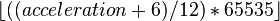

![[Main Page]](../../rsrc/bci2000logo.svg)
gNautilus
Contributions
Synopsis
The g.Nautilus is a biopotential amplifier with wireless transmission technology with either wet or dry electrodes. It reads in up to 32 signal channels and 8 trigger channels.
Location
http://www.bci2000.org/svn/trunk/src/core/SignalSource/g.NautilusSource
Versioning
Author
Kristopher Kaleb Goering (kaleb.goering@gmail.com) University of Kansas
Version History
Version 1.0: July 2015
- Supports a single g.Nautilus
- Referencing by any channel
- Supports filters
Source Code Revisions
- Initial development: 4928
- Tested under: 4942
- Known to compile under: 4942
- Broken since: N/A
Functional Description
The g.Nautilus is a wireless headset by g.tec, and is the first in their product line to use g.NEEDaccess exclusively for realtime access. This documentation explains the parameterization and specifics on how to set up the system.
NOTE: As of right now, g.Nautilus is only supported by Windows 7 with 32 bit and newer. g.Nautiulus can only be built using Visual Studio on Windows.
Install g.NEEDaccess_Sever on a 32bit machine. Ensure the device is charged and connected to the base station (refer to the included documentation for help with this). Start BCI2000 with the gNautilusSource module.
Parameters
SourceCh
represents the total number of channels to be logged from the source module.
SampleBlockSize
should be set equal to the size of the sample block pulled from the device.
NOTE: 25 and up found to work best during testing for 250Hz
SampleRate
determines the rate at which the device samples data.
NOTE: Only the following sample rates are currently supported by the API: 250Hz and 500Hz.
ChannelNames
is a convenience parameter. Name channels here and they can be referenced by these names later.
SourceChOffset
should be set to a list of "0"s -- one 0 for each channel as indicated by SourceCh, separated by spaces.
SourceChGain
should be set to a list of "1"s -- one 0 for each channel as indicated by SourceCh, separated by spaces.
DeviceIDMaster
is the serial number identifier of the master g.Nautilus device. This serial can be found on the physical device and is typically in a "NB-20XX.XX.XX" format. This parameter can also be set to "auto" if there is only one g.Nautilus device connected to the machine.
DeviceIDs
is a list of device serials (typically in "NB-20XX.XX.XX" format) which corresponds to the devices to record channels from. One of these serials must be specified as the master device in the "DeviceIDMaster" parameter. This parameter can also be set to "auto" if there is only one g.Nautilus device connected to the machine.
NOTE: Device slaving has not been tested.
RefChList
is a list of channels which can act as "Reference" channels for each device. If left blank, no channel will be used as a reference, and the raw signal will be recorded in the output.
NOTE: If specifying reference channels, there must be one reference channel per device specified in "DeviceIDs" in the same order.
SourceChList
FilterEnabled
FilterHighPass
FilterLowPass
FilterModelOrder
FilterType
NotchEnabled
NotchHighPass
NotchLowPass
NotchModelOrder
NotchType
SourceBufferSize
EnableAccelerationData
is a toggle button to enable acceleration data and store them in synchronous states AccelerationX1, AcceleratioY1, and AccelerationZ1.
NOTE To record acceleration data, at least one analog channel must also be recorded.
EnableCounterInput
is a toggle button to enable the counter data and store it in the synchronous state Counter1.
NOTE To record counter data, at least one analog channel must also be recorded.
EnableLinkQuality
is a toggle button to enable the link quality data and store it in the synchronous state LinkQuality1.
NOTE To record link quality data, at least one analog channel must also be recorded.
EnableBatteryLevel
is a toggle button to enable the battery level data and store it in the synchronous state Battery1.
NOTE To record battery level data, at least one analog channel must also be recorded.
EnableDigitalInputs
is a toggle button to enable both digital input ports and store them in synchronous states DigitalInput1 - DigitalInput8.
NOTE To record digital input, at least one analog channel must also be recorded.
EnableValidationIndicator
is a toggle button to enable validation data and store it in the synchronous state Validation1.
NOTE To record validation data, at least one analog channel must also be recorded.
States
Acceleration
Acceleration is stored in three separate states with the axis labeled, i.e. the acceleration on the x-axis is stored in AccelerationX1. The g.Nautilus records the acceleration between -6g and 6g. It is then translated into a value between 0 and 65535 with the equation

Thus if the acceleration was 0 then the state would have the value 32767.
Counter
Counter is a value that is constantly increasing in value and then repeats starting at 0. It is stored in Counter1.
Link Quality
Link quality is a value between 0 and 100. It is stored in LinkQuality1. When link quality falls bellow 10% the first time, BCI2000 will give a warning.
Battery Level
Battery level is a value between 0 and 100. It is stored in Battery1. When battery falls bellow 10%, BCI2000 will give a warning and again when it falls below 5%.
Digital Input
Digital input port is on the Base Station. The value is between 0 and 255 and then separated into to a binary number which is then saved in a state with the corresponding number of the bit, i.e. bit 5 is stored in DigitalInput5.
{kind=link}
Validation Indicator
Validation indicator is a value of 0 or 1. It is stored in Validation1. If it is 0, then the data may not be valid. If it is 1, the data is valid.